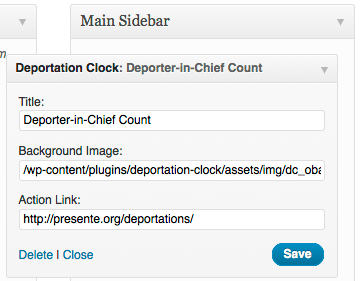

Encourage your website visitors to take action on the Deportation crisis

This widget looks great as a sidebar or footer widget in your theme. If you've got themer skills, tweak the standard PHP, CSS or JS code to suite your theme. Its all MIT licensed, so have at it!
Features
- Simple way to show the urgency of the Deportation crisis
- Easily change the background art
- Set your own action link
- Set your own widget title
To put it on your website
- Download the Zip file from above and upload it to your WordPress website, via the admin, under Plugins -> Add New -> Upload.
- Activate it.
- Head over to Appearance -> Widgets. It will appear under "Available Widgets".
- Depending on your theme, drag it to your Sidebar or Footer area and Save.
Widget Title
Set a Title for the widget, we prefer to keep it real and title ours with the "Deporter in Chief Count". Change it any time under Appearance -> Widgets -> Deportation Clock widget, "Title" field
Art
Art is by the fabulous Favianna Rodriguez. Don't like Favi's art, make your own! Stick to 300 width by 270 height, upload it, and edit the Background Image path under Appearance -> Deportation Clock widget, "Background Image" field.
{kind=link}
ACT NOW Link
By default, the yellow Act Now text links back to the action page of the original creator of the Deportation Clock, Presente.org. You can easily change the link in the widget at any time to your own action under Appearance -> Widgets -> Deportation Clock widget, "Action Link" field.

Support or Pull Requests
File an issue on GitHub and we’ll look for a fix. Screenshots and browser versions help a lot. Created a fix and want to contribute back to the code? Fork us and submit a pull request.